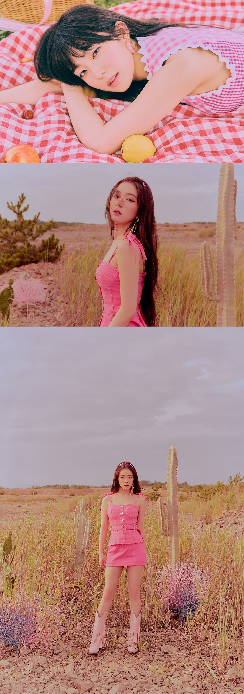

레드벨벳 아이린 티저 공개 레드벨벳 아이린의 티저 이미지가 공개 되어 화제다. 톡톡 튀는 서머송 ‘음파음파 (Umpah Umpah)’로 컴백하는 레드벨벳(Red Velvet, SM엔터테인먼트 소속)은 공식 홈페이지 및 각종 SNS 공식 계정을 통해 압도적 비주얼과 고혹적인 눈빛이 돋보이는 아이린의 티저 이미지를 선보여 시선을 집중시켰다.
더불어 레드벨벳 SNS 공식 계정에서는 새 앨범 수록곡 ‘Ladies Night’(레이디스 나이트)의 하이라이트 음원도 만날 수 있으며, 이 곡은 펑키한 리듬과 화려한 브라스 연주, 풍성한 스트링 사운드 등이 레드벨벳의 달콤한 보컬과 조화를 이룬 R&B 팝 장르 곡으로, 눈빛만으로도 통하는 친구들과 오랜만에 모여 소소한 일상을 나누는 한여름 밤의 이야기를 풀어낸 가사가 인상적이다.
한편, 레드벨벳의 새 미니앨범 ‘‘The ReVe Festival’ Day 2’(‘더 리브 페스티벌’ 데이 2)는 8월 20일 오후 6시 각종 음악 사이트에서 공개되며, 같은 날 음반으로도 발매된다.